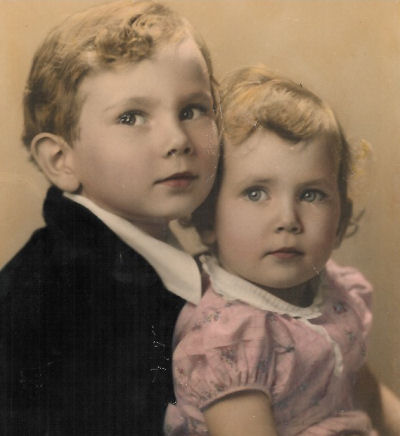

| Mary's Story | |
 |
Photo: Mary and her brother David, 1941. I was born February 19, 1939 at Santa Monica Hospital in Santa Monica, CA. I lived in two different houses while growing up, but they were both on the same street. The first house was one of the old original Spanish houses a couple of blocks below San Vicente. Then when I was 12 yrs. old my folks had a new house built across the street and up a few houses. I had the blessing of being born into a solid Christian family. My childhood was happy and secure. My family were members of the Santa Monica Church of the Nazarene, and I was taken to church “prenatally”. When I was 5 or 6 I felt a strong conviction that I wanted to ask Jesus into my life, which I did. That desire has remained strong throughout my life, even through the “ups & downs” of growing up. I have a vivid memory of being baptized when I was 11 years old, and my mom’s best friend was also baptized the same day. She never had any children so she always said she was my “other mother”. |
|
I learned first-hand as a child that God didn’t just work miracles in Bible times… He still does them today. I was born with very poor vision (only about 50%) and a very crossed eye. From the time I was 6 until I was 12 years old I wore very thick, strong glasses. When I was 12 an evangelist who had a genuine gift of healing came to L. A. My parents took me to one of his healing meetings, where I saw him lay his hands on and pray for many, many people. Each one was healed instantly… people who were deaf, blind, mute, had broken bones, goiters (soccer ball sized swollen glands on the side of their neck), etc. I was in a long line of people waiting to be prayed for. When it finally came my turn, he asked me to tell him, with my glasses on, what I could see and I told him I could see all the people in the audience. Then He asked me to take my glasses off and tell him what I could see. I told him it was all a big blur. He asked if I could see any individual faces and I told him I couldn’t. He then put his thumbs on my eyes and prayed. When he took his hands away he asked me what I could see and I told him I could see all the people individually. Then he asked me to put my glasses back on and tell him what I could see. I told him it was all a terrible blur and my glassed hurt my eyes. Then he told me to take them off and go. When my mom took me for my next appointment with the eye doctor, he was very puzzled at the difference in my vision. When my mom told him that God had healed my eyes he got very angry… he was an atheist and wouldn’t accept that explanation. He ushered us out of his office and wouldn’t have anything more to do with us!
Two years later, when I was 14, I learned another lesson. I learned that God will do for us what we can’t do for ourselves, but what we can do, He expects us to do. When God healed my vision He didn’t heal my eye from being crossed. Only He could heal my vision, but doctors could straighten my eye. So at 14 I had surgery to correct my crossed eye. What a difference God and those experiences have made in my life! I had a lot of fun friends in the neighborhood, at school and at church. My best buddies lived close by… one next door and the other just the next block over. We were "The Three Musketeers". During our teen years we were fortunate to have some faithful sponsors at church who had lots of activities and parties to keep us interested and involved. We all looked forward each winter to a snow trip in the mountains. And the highlight of each summer was church camp at Idylwild Pines. After graduating from high school I went to Pasadena (Nazarene) College and…… |
|